1. Light protection
The "Heathcote Light Shield". A quick removal, lightweight felt lined box that provides protection against inherent light leaks around the diffraction grating assembly.
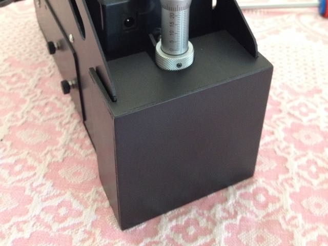
Flocking around the diffraction grating to minimise internal reflections:
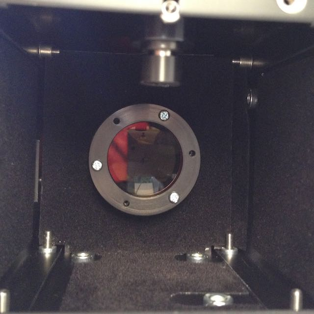
2. Guide mirror adjustment
Spring loaded guide mirror collimation screws to make adjustment much easier:
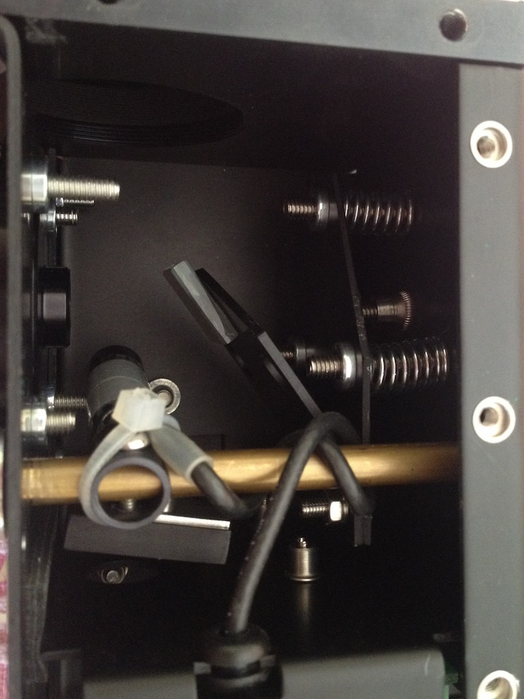
3. Neon automation
The motorised neon assembly uses an Arduino Uno circuit board for driving a micro servo, together with a mofset for controlling 12V DC power to the neon lamp driver.
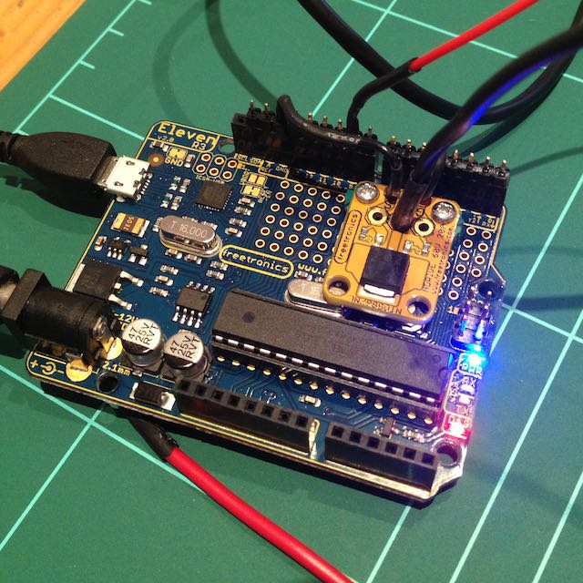
The servo is mounted to a bracket that allows a simple 'push fit' into a reversed servo horn attached to the output of the existing neon shaft. The assembly is held in place with a single hex screw. Power and USB are at the rear of the circuit housing. A Visual Basic program provides control of the neon assembly, and future collimator focus.
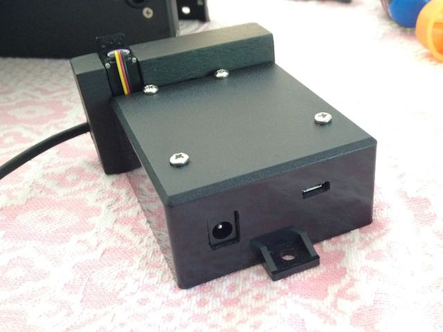
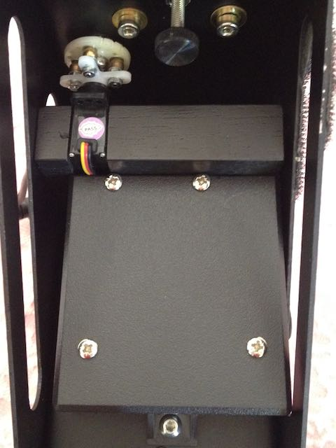
A close-up view of the reversed servo horn assembly. The idea, adapted from the design by Stephane Ubaud is self explanatory.
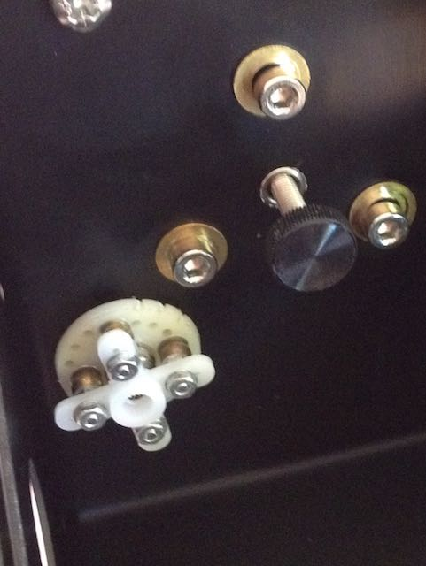
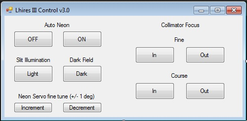
4. Motorised collimator focus
Step 1 - Mounting the main gear. A spur gear bored to 40mm internal diameter held onto the existing collimator lens barrel with 3 screws set at 120 degrees.
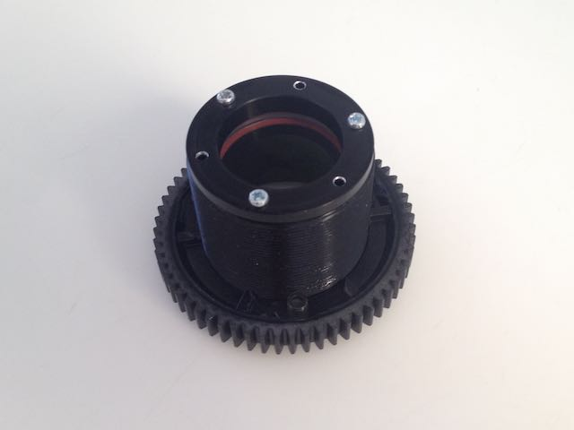
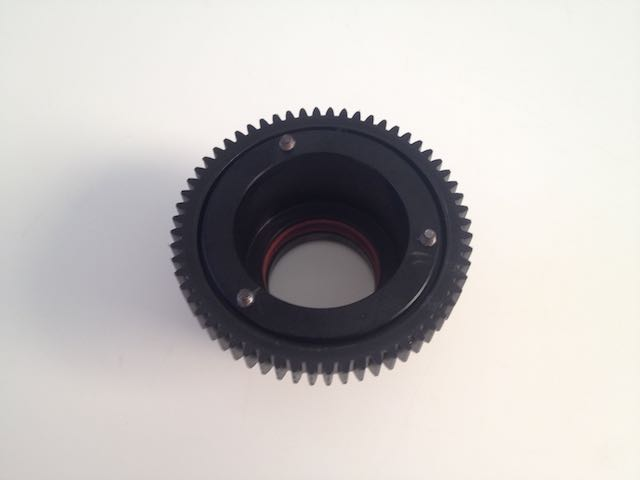
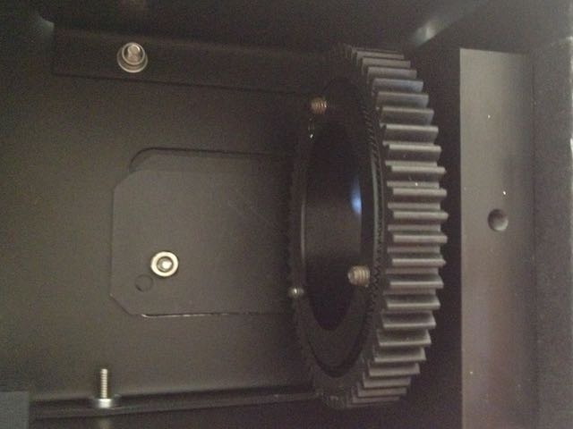
Next steps ... internally mounted continuous rotation micro servo (under construction).
5. Mirror adjustment
This modification utilises a spring mounted screw for precise pivot adjustment of the main mirror.
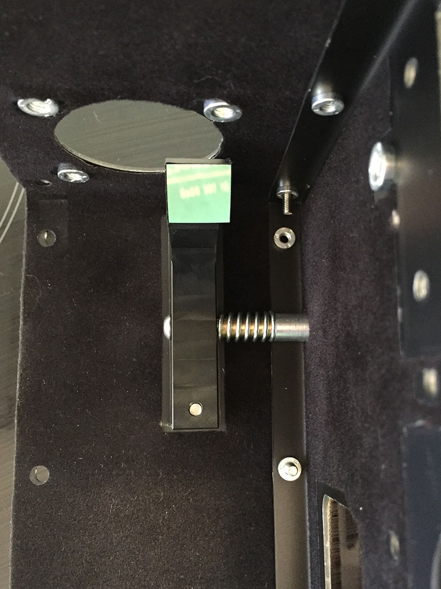
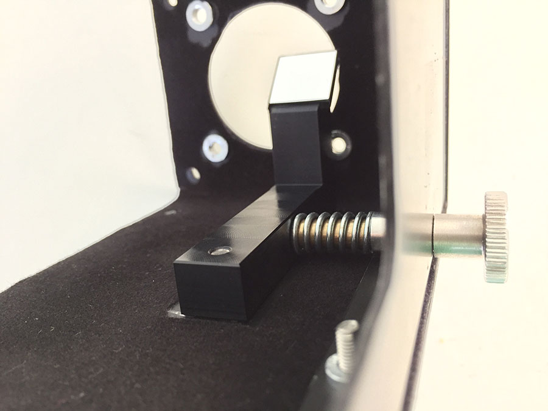
6. Internal flocking
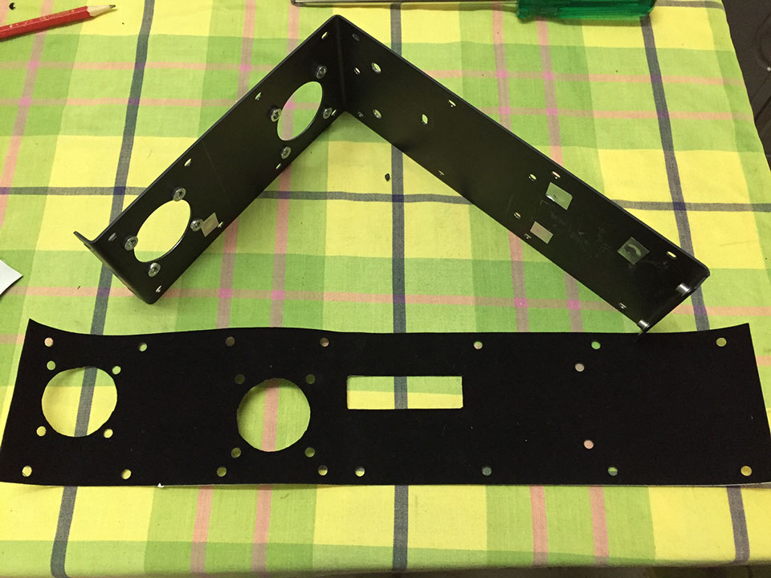